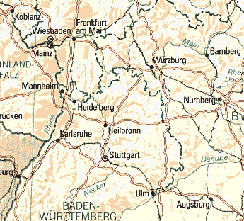

Corner.js 1.8 allows you to add corners (and also shading and shadow) to images on your webpages (alternatively: glossy.js). It uses unobtrusive javascript to keep your code clean.
It works in all the major browsers - Mozilla Firefox 1.5+, Opera 9+, IE 6+ and Safari. On older browsers, it'll degrade and your visitors won't notice a thing.
CVI-lab: Get a fast impression of the effects and their illustration qualities.
Setting Up
Download "corner.js" and include it into your webpage.
To add corners just add a class="corner" and an additonal class like "iradius16" to the image.
Classes
Initialisation class "corner"
vary the radius by adding iradius followed by the desired radius in pixel:
Corner radius class "iradius24" - min=0 max=100 default=0
vary the shading by adding ishade followed by the desired opacity in percentage:
Image shading class "ishade50" - min=0 max=100 default=0
vary the shadow by adding ishadow followed by the desired opacity in percentage:
Image shadow class "ishadow33" - min=0 max=100 default=0
vary the shadow by adding inverse:
Shadow invert class "inverse"
Scripting
If you want flexibility, use "cvi_corner_lib.js" instead of "corner.js".
You can make your images respond to user actions (e.g. changing one or more options when the image is hovered over).
cvi_corner.add(image, options); image should be an image element: document.getElementById("myimg") options can contain one or more values: {radius: value, shadow: value, shade: value, inverse: value}
cvi_corners.add(image, options); image should be an image element: document.getElementById("myimg") options can contain one or more values: {xradius: value, yradius: value, corners: value}
vary the radius by adding iradius followed by the desired radius in pixel:
Corner radius class "iradius24" - min=0 max=100 default=16
vary the corners by adding iradiae followed by the desired bits as bitchain:
Corner selection class "iradiae1010" - default=1111 [top left|top right|bottom left|bottom right]
vary the border by adding iborder followed by the desired width in pixel:
Corner border class "iborder2" - min=0 max=100 default=0
vary the border color by adding icolor followed by the color as string:
Border color class "icolor0000ff" - min=000000 max=ffffff default=0000ff
class = "corners iradius32"
class = "corners iradiae1010"
class = "corners iborder1 icolorffffff"
Supports "usemap"

Why use Javascript Image Corners?
Fast and easy to implement. Just add class="corner iradius[n]" to the image and your good to go.
Don't need to spend time in an image editor creating images with corners.
Works really well with forum avatars. Doesn't require additional server work.
It's dead easy to change the attributes of the corners.
Free of charge use on non-commercial and private web sites.
In older browsers, the script degrades and your visitors won't notice a thing.
Restrictions
Opera do not support printing of canvas.
Credits
Original idea is mine but the inspiration for the script came from reflection.js.
History
Version 1.8
Added smooth border shading and shining
Version 1.7
Added border support for cvi_corners_lib.js and justcorners.js
Version 1.6
Added scriptable lib versions cvi_corner_lib.js and cvi_corners_lib.js
Version 1.5
Added soft shadows for Internet Explorer 6/7
Version 1.4
Added support for img attributes: id alt title src onclick
Added Internet Explorer support for iradiae
Version 1.3
Added support for Internet Explorer 6/7 (iradiae is missing and shading isn't complete)
Version 1.2
Added usemap support for block element surrounded images
Version 1.1
Added soft shadows
Appended justcorners.js
Version 1.0
Initial Release
License
Corner.js, justcorners.js, cvi_corner_lib.js and cvi_corners_lib.js are distributed under this LICENSE. License permits free of charge use on non-commercial and private web sites only under special conditions (as described in the license). This license equals neither "open source" nor "public domain". There are also Commercial Software Licenses available.
YOU AGREE TO ALL CONDITIONS OF THIS LICENCE AGREEMENT CONCERNING THE USE OF THE SOFTWARE BY ACCEPTING THIS LICENCE.
IF YOU DO NOT AGREE TO ALL CONDITIONS OF THIS AGREEMENT, YOU SHALL NOT INSTALL THE SOFTWARE, OR USE IT IN OTHER WAYS.
Images used are copyrighted and are used for demonstration only.
{kind=link}